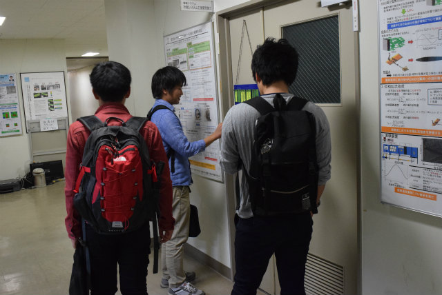

去年に引き続いて上旬に見に行きました．日没から10分後くらいに出て，疎水の奥まで行って戻るくらいに見え始めました．ちょうど8時頃がピークのようです．例年に無く飛んでいて見応えありました．風はありませんが，やはり20度弱と肌寒いです．今年はB4とM1のT口さんと助教の人と少なめの参加．M2は就活で全員休み．おそるべし超売り手市場．．．
B4は参加
来週締切なM1のK保西くんはパス（助教の人もでは？）
．．．．
蛍は居るの？
gifと

プログラムで重ねれば見えるよ！
| ・ 蛍 (H29.06.05) | |||
去年に引き続いて上旬に見に行きました．日没から10分後くらいに出て，疎水の奥まで行って戻るくらいに見え始めました．ちょうど8時頃がピークのようです．例年に無く飛んでいて見応えありました．風はありませんが，やはり20度弱と肌寒いです．今年はB4とM1のT口さんと助教の人と少なめの参加．M2は就活で全員休み．おそるべし超売り手市場．．． |
|||
|

B4は参加 |
来週締切なM1のK保西くんはパス（助教の人もでは？） | ||
|
．．．． |
蛍は居るの？ | ||
|
gifと |
プログラムで重ねれば見えるよ！ | ||